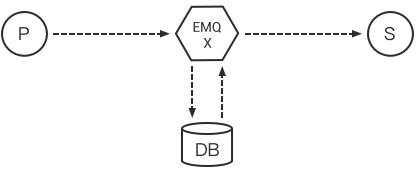
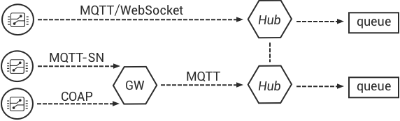
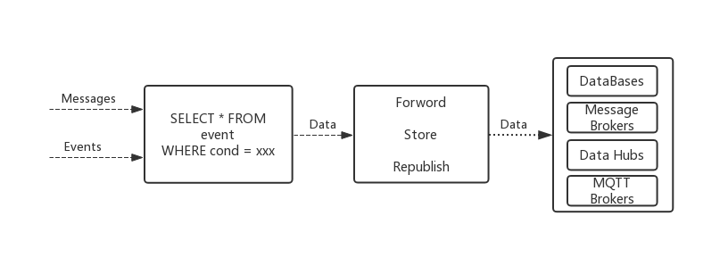
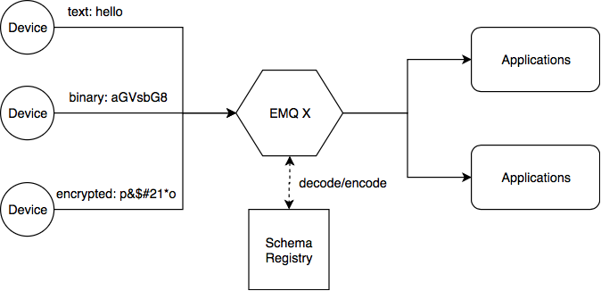
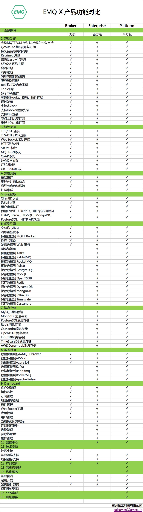

EMQ X 消息服务器功能列表
- 完整的 MQTT V3.1/V3.1.1 及 V5.0 协议规范支持
- QoS0, QoS1, QoS2 消息支持
- 持久会话与离线消息支持
- Retained 消息支持
- Last Will 消息支持
- TCP/SSL 连接支持
- MQTT/WebSocket/SSL 支持
- HTTP 消息发布接口支持
- $SYS/# 系统主题支持
- 客户端在线状态查询与订阅支持
- 客户端 ID 或 IP 地址认证支持
- 用户名密码认证支持
- LDAP 认证
- Redis、MySQL、PostgreSQL、MongoDB、HTTP 认证集成
- 浏览器 Cookie 认证
- 基于客户端 ID、IP 地址、用户名的访问控制 (ACL)
- 多服务器节点集群 (Cluster)
- 支持 manual、mcast、dns、etcd、k8s 等多种集群发现方式
- 网络分区自动愈合
- 消息速率限制
- 连接速率限制
- 按分区配置节点
- 多服务器节点桥接 (Bridge)
- MQTT Broker 桥接支持
- Stomp 协议支持
- MQTT-SN 协议支持
- CoAP 协议支持
- Stomp/SockJS 支持
- 延时 Publish ($delay/topic)
- Flapping 检测
- 黑名单支持
- 共享订阅 ($share/:group/topic)
- TLS/PSK 支持
- 规则引擎
- 空动作 (调试)
- 消息重新发布
- 桥接数据到 MQTT Broker
- 检查 (调试)
- 发送数据到 Web 服务
以下是 EMQ X Enterprise 特有功能
- Scalable RPC 架构: 分离 Erlang 自身的集群通道与 EMQ X 节点间的数据通道
- 数据持久化
- Redis 存储订阅关系、设备在线状态、MQTT 消息、保留消息，发布 SUB/UNSUB 事件
- MySQL 存储订阅关系、设备在线状态、MQTT 消息、保留消息
- PostgreSQL 存储订阅关系、设备在线状态、MQTT 消息、保留消息
- MongoDB 存储订阅关系、设备在线状态、MQTT 消息、保留消息
- Cassandra 存储订阅关系、设备在线状态、MQTT 消息、保留消息
- DynamoDB 存储订阅关系、设备在线状态、MQTT 消息、保留消息
- InfluxDB 存储 MQTT 时序消息
- OpenTDSB 存储 MQTT 时序消息
- TimescaleDB 存储 MQTT 时序消息
- 消息桥接
- Kafka 桥接：EMQ X 内置 Bridge 直接转发 MQTT 消息、设备上下线事件到 Kafka
- RabbitMQ 桥接：EMQ X 内置 Bridge 直接转发 MQTT 消息、设备上下线事件到 RabbitMQ
- Pulsar 桥接：EMQ X 内置 Bridge 直接转发 MQTT 消息、设备上下线事件到 Pulsar
- RocketMQ 桥接：EMQ X 内置 Bridge 直接转发 MQTT 消息、设备上下线事件到 RocketMQ
- 规则引擎
- 消息编解码
- 桥接数据到 Kafka
- 桥接数据到 RabbitMQ
- 桥接数据到 RocketMQ
- 桥接数据到 Pulsar
- 保存数据到 PostgreSQL
- 保存数据到 MySQL
- 保存数据到 OpenTSDB
- 保存数据到 Redis
- 保存数据到 DynamoDB
- 保存数据到 MongoDB
- 保存数据到 InfluxDB
- 保存数据到 Timescale
- 保存数据到 Cassandra
- Schema Registry：将 EMQ X 的事件、消息 提供了数据编解码能力
EMQ X Enterprise
EMQ X Enterprise 是一个强大的企业级物联网 MQTT 消息平台，由开发开源 EMQ X 的人员构建。
EMQ X Enterprise 支持百万级物联网设备一站式接入、MQTT&CoAP 多协议处理、低时延实时消息通信。它保持了 EMQ X 的简单性和高性能，同时增加了许多企业特性：
- 连接性能增强到百万级、千万级，支持私有协议及行业协议定制，基于 TCP/UDP 私有协议的旧网设备接入兼容，支持全网络多协议设备接入；
- 支持 Redis, MySQL, PostgreSQL, MongoDB 多种数据库消息数据持久化，消息转换写入 InfluxDB, OpenTSDB, TimescaleDB 多种时序数据库，支持自动从 Redis 或数据库加载订阅，无需客户端主动发起；
- 消息与流中间件消息桥接：10万/秒高性能高可靠转发消息到 Kafka 流处理中间件，无缝集成 RabbitMQ、Pulsar 企业消息中间件；
- 全球专业团队技术支持，我们的团队覆盖全球北美、欧洲、中国 5 个分支机构，有来自华为、IBM、Amazon 专业创始团队，以及欧洲、北美、印度近十家合作伙伴，能够全天侯相应一流的技术支持与咨询服务。
消息数据存储
EMQ X 企业版支持存储订阅关系、MQTT 消息、设备状态到 Redis、MySQL、PostgreSQL、MongoDB、Cassandra、TimescaleDB、InfluxDB、DynamoDB、OpenTDSB 数据库:

数据存储相关配置，详见"数据存储"章节。
消息桥接转发
EMQ X 企业版支持直接转发 MQTT 消息到 RabbitMQ、Kafka、Pulsar、RocketMQ、MQTT Broker，可作为百万级的物联网接入服务器(IoT Hub):

规则引擎
EMQ X 规则引擎可以灵活地处理消息和事件。
EMQ X 企业版规则引擎支持消息重新发布；桥接数据到 Kafka、Pulsar、RocketMQ、RabbitMQ、MQTT Broker；保存数据到 MySQL、PostgreSQL、Redis、MongoDB、DynamoDB、Cassandra、InfluxDB、OpenTSDB、TimescaleDB；发送数据到 WebServer:

规则引擎相关配置，详见"规则引擎"章节。
编解码
Schema Registry 目前可支持三种格式的编解码：Avro，Protobuf，以及自定义编码。其中 Avro 和 Protobuf 是依赖 Schema 的数据格式，编码后的数据为二进制，解码后为 Map 格式 。解码后的数据可直接被规则引擎和其他插件使用。用户自定义的 (3rd-party) 编解码服务通过 HTTP 或 TCP 回调的方式，进行更加贴近业务需求的编解码。

编解码相关配置，详见"编解码"章节。
EMQ X 不同版本对比
